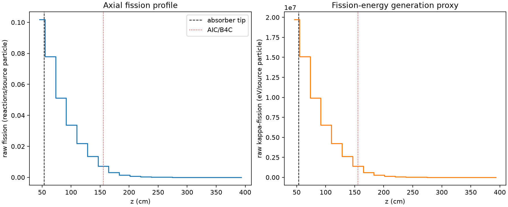
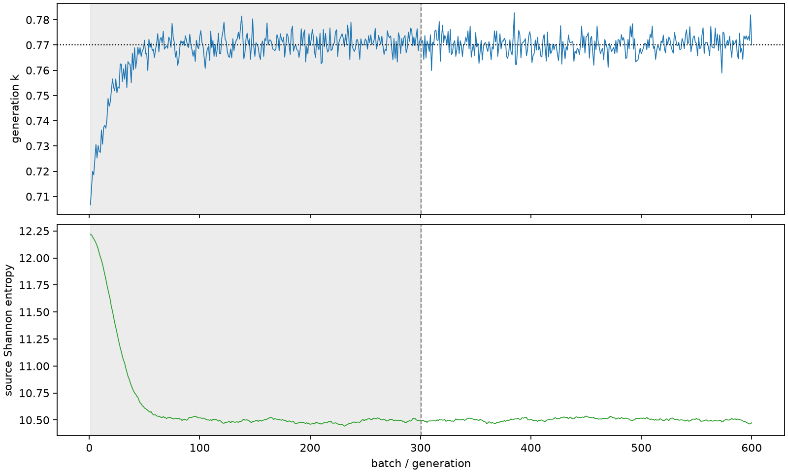

| field | value |
|---|---|
| experiment | V2-ADAPTIVE_01-0012 |
| k | 0.7701703705433762 |
| MC standard error | 0.00016887406047779642 |
| seconds | 992.7383803330013 |
| acceptance | not_assessed |
| convergence | review_required |
Completed is output integrity only; physical and statistical review required. Zero tallies do not prove zero production or zero uncertainty.
| diagnostic | value |
|---|---|
| geometric fuel voxels | 5280 |
| zero fission tally voxels | 200 |
| low signal fuel voxels | 1828 |
| low signal fission share | 0.00018851415427392995 |
| low signal kappa share | 0.00018855576346777514 |
| important fission share | 0.9501290972237638 |
| previous filter included | 3452 |
| duration estimate s | 1562.5173488400023 |
| actual minus estimate s | -569.7789685070011 |
| fission relative MC error | statistics |
|---|---|
| all_geometric_fuel | {"voxels": 5280, "positive_mean_voxels": 5080, "zero_mean_voxels": 200, "undefined_relative_error_voxels": 200, "median": 0.05416348324311783, "p95": 0.966492818931287, "maximum": 1.0000000000000002} |
| low_signal | {"voxels": 1828, "positive_mean_voxels": 1628, "zero_mean_voxels": 200, "undefined_relative_error_voxels": 200, "median": 0.5499340726420456, "p95": 1.0, "maximum": 1.0000000000000002} |
| important_95pct | {"voxels": 1527, "positive_mean_voxels": 1527, "zero_mean_voxels": 0, "undefined_relative_error_voxels": 0, "median": 0.006737997873712297, "p95": 0.012562778759073986, "maximum": 0.013742742491718302} |
| outside_previous_filter | {"voxels": 1828, "positive_mean_voxels": 1628, "zero_mean_voxels": 200, "undefined_relative_error_voxels": 200, "median": 0.5499340726420456, "p95": 1.0, "maximum": 1.0000000000000002} |
| kappa_fission relative MC error | statistics |
|---|---|
| all_geometric_fuel | {"voxels": 5280, "positive_mean_voxels": 5080, "zero_mean_voxels": 200, "undefined_relative_error_voxels": 200, "median": 0.05404458830462206, "p95": 0.9664862305959105, "maximum": 1.0000000000000002} |
| low_signal | {"voxels": 1828, "positive_mean_voxels": 1628, "zero_mean_voxels": 200, "undefined_relative_error_voxels": 200, "median": 0.5478944990344121, "p95": 1.0, "maximum": 1.0000000000000002} |
| important_95pct | {"voxels": 1527, "positive_mean_voxels": 1527, "zero_mean_voxels": 0, "undefined_relative_error_voxels": 0, "median": 0.006722433506300442, "p95": 0.01254053367290887, "maximum": 0.0137225156739573} |
| outside_previous_filter | {"voxels": 1828, "positive_mean_voxels": 1628, "zero_mean_voxels": 200, "undefined_relative_error_voxels": 200, "median": 0.5478944990344121, "p95": 1.0, "maximum": 1.0000000000000002} |
| axial bin | fission share | kappa-fission share |
|---|---|---|
| 1 | 0.3249427866611636 | 0.32487265815548033 |
| 2 | 0.24881463390298822 | 0.24883735552571995 |
| 3 | 0.16330660855609375 | 0.16332310948429782 |
| 4 | 0.10776782298353323 | 0.10777913370523158 |
| 5 | 0.0699218899221233 | 0.0699292391906454 |
| 6 | 0.043128408014837374 | 0.043132866272010434 |
| 7 | 0.022788219125194364 | 0.022791585968621464 |
| 8 | 0.010284236283672515 | 0.010286563612975731 |
| 9 | 0.0047845030772042905 | 0.004785563086131844 |
| 10 | 0.0022890695645185703 | 0.002289618449600648 |
| 11 | 0.0010454120674398787 | 0.0010456744517223367 |
| 12 | 0.00048822541973167033 | 0.0004883494463696686 |
| 13 | 0.00024571073662016293 | 0.0002457634647979239 |
| 14 | 0.00011437050880243914 | 0.00011439609690589799 |
| 15 | 4.5676882251687445e-05 | 4.5688299506068635e-05 |
| 16 | 1.99068476737543e-05 | 1.9909018079049195e-05 |
| 17 | 7.164944805457166e-06 | 7.170329860340567e-06 |
| 18 | 3.3591661563590852e-06 | 3.360317793401088e-06 |
| 19 | 1.479104588176782e-06 | 1.4788297114339227e-06 |
| 20 | 5.162306012509584e-07 | 5.162945384853022e-07 |
Histories include the inactive-to-active transition at batch 300. kappa-fission approximates fission energy production, not total heat deposition.

